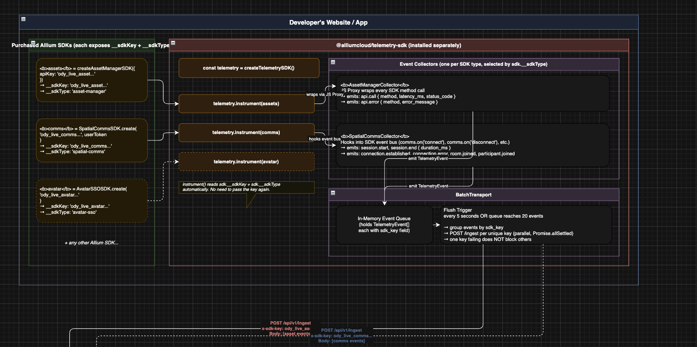
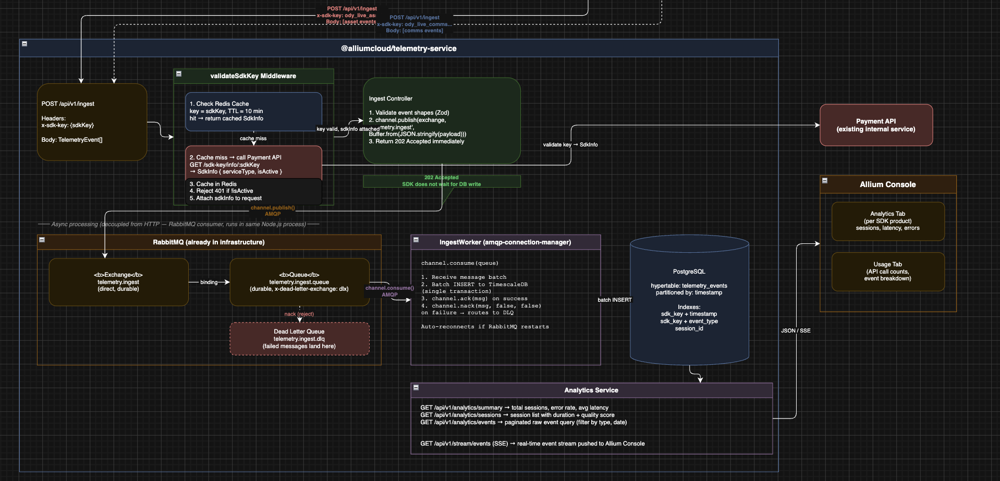

Building a Telemetry Pipeline
Technical Status Update • June 2026
Project Overview
I am building a centralized telemetry service designed to capture and analyze real-time lifecycle events from distributed client applications (10 SDKs being used in my research). The core goal is to have instant visibility into application performance, latencies, and errors. The system must process events smoothly without risking database degradation or affecting API performance during traffic spikes.
My Role
As the architecture and backend developer of the package, my primary responsibility was designing the ingestion pipeline. I mapped the path data takes from the initial client event trigger down to the final time-series data storage.
System Architecture & Ingestion Design
Backend Telemetry Ingestion

Client-Side SDK Instrumentation

Work Completed
- Designed Layered Architecture: Drafted the system blueprint separating the ingestion gateway from physical database writes.
- Optimized Verification Middleware: Structured a token authorization system utilizing a local Redis caching layer with a 10-minute Time-To-Live (TTL) to bypass expensive downstream API queries.
- Configured Asynchronous Ingestion: Integrated a decoupled messaging queue system using RabbitMQ to ingest data immediately, returning a fast 202 Accepted response to the client.
- Structured Storage Schema: Defined the data layout inside PostgreSQL using the TimescaleDB extension to automatically partition telemetry logs into time-segmented chunks.
Challenges & Solutions
The Challenge:
Directly writing high-frequency event payloads to a traditional relational database creates severe connection bottlenecks during sudden traffic spikes.
The Solution:
I implemented a strict decoupling strategy. Client-side SDKs buffer event packets locally before sending them. On the backend, RabbitMQ acts as a buffer zone, handling incoming pressure seamlessly while standalone background workers process entries at a stable rate.
Key Learnings
- Time-Series Partitioning: I discovered how TimescaleDB hypertables maintain quick index speeds by keeping data segments small enough to fit within memory cache.
- System Resiliency: Working with message brokers reinforced the importance of Dead Letter Queues (DLQs) for isolating corrupt payloads and preventing data loss.